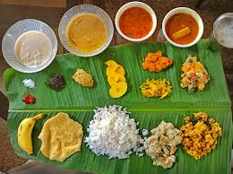

Sadhya

Sadhya is a traditional Kerala feast served on a banana leaf with a variety of vegetarian dishes.
It is usually prepared during festivals and special occasions like Onam.
Ingredians
- Rice
- Coconut
- Yogurt
- Vegetables
- Curry leaves
- Banana chips
Steps
- Wash and cook the rice until soft.
- Prepare vegetable dishes such as avial, thoran, and sambar.
- Make side dishes like pickle, pappadam, and banana chips.
- Arrange all dishes on a banana leaf.
- Serve with rice and enjoy the traditional feast.